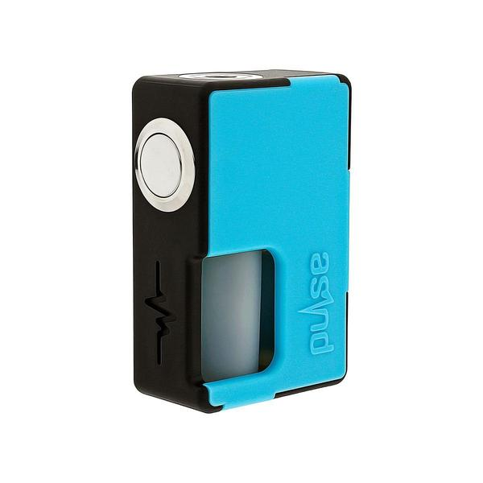
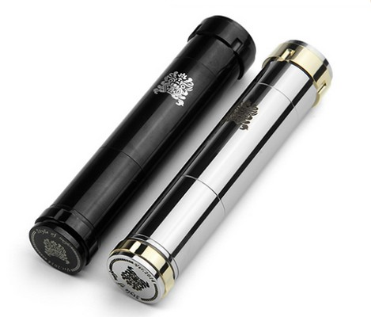
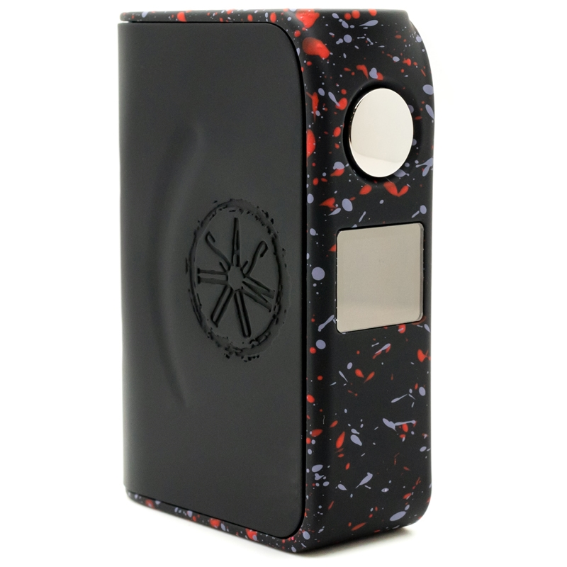

Mods
Un mod est tout simplement une batterie sur la quelle viendra s'inséré l'atomiseur. Il existe plusieurs types de mod avec differentes fonctionnalités tel que le contrôle de température qui néssécite un materiel particulier. Il faut egalement savoir que certaint mods contienne des accus d'autres non, la dernière catégorie a donc une batterie directement intégré, ce qui peut éventuelement posé problème de durée de vie, car si le mod possède des accus il suffis simplement de les changer.

Nouveau mod avec un systeme de remplissage intégré

Mod mécanique

Mod triple accus

Mod électronique